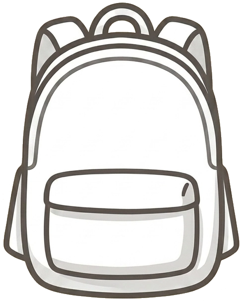
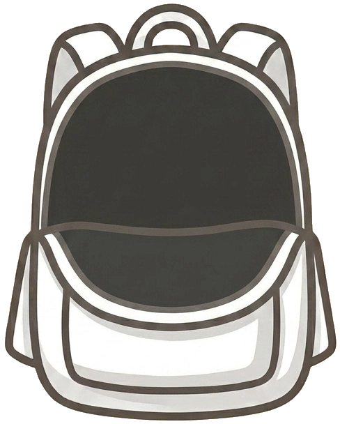

‹


0
Your backpack
0
P$
0
PB
Copy the whole backpack
Clear everything
×
Cours en direct ?
Suivre
Quitter
1 / 5
‹ Précédent
Continuer ›
Passer aux exercices
Ce qui a été dit
Afficher la traduction
À retenir
Terminer ›